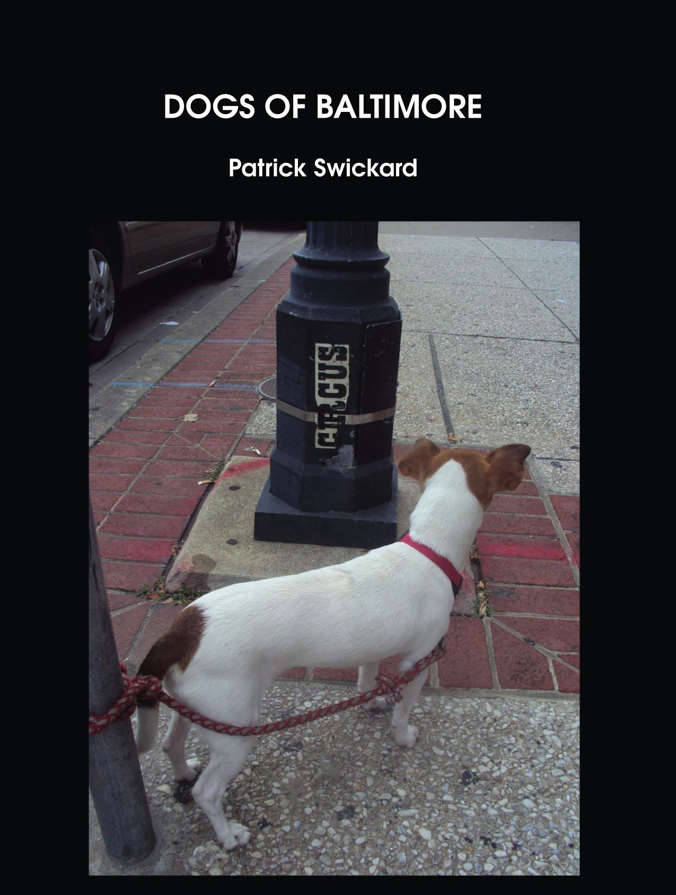
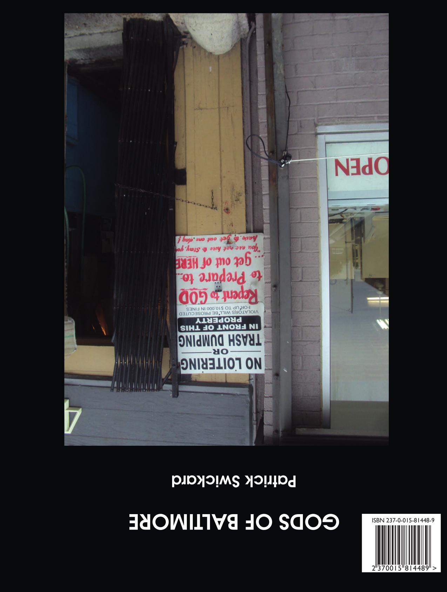

Dogs of Baltimore/Gods of Baltimore
Patrick Swickard
8.5"x11" paperback, 290 pages
And now I'm ready to close my eyes
And now I'm ready to close my mind
And now I'm ready to feel your hand
And lose my heart on the burning sands
And now I wanna be your dog
And now I wanna be your dog
And now I wanna be your dog
- The Stooges
This is a double-volume reversible book. The front features all the content from Dogs of Baltimore. Flip it over and read it from the back and you get all the content from Gods of Baltimore. Two great volumes in one, full of images of Gods and Dogs.